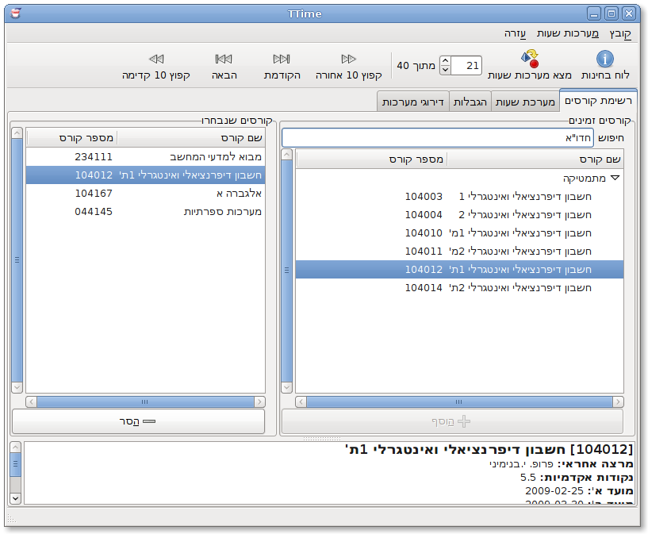
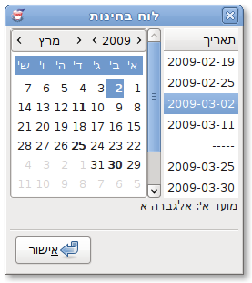
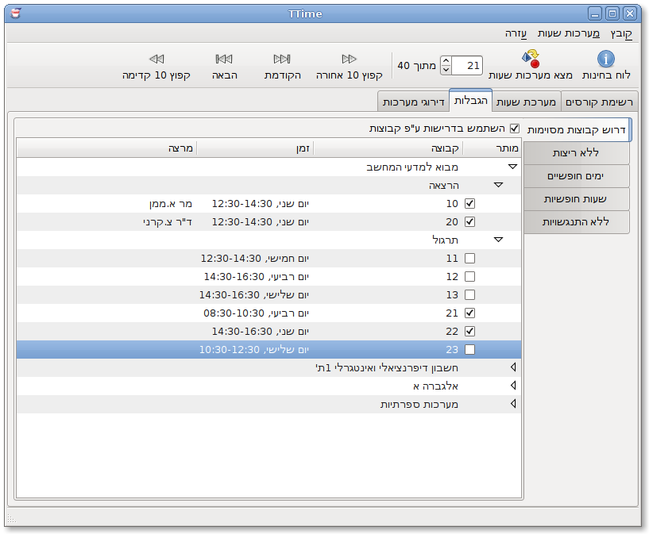
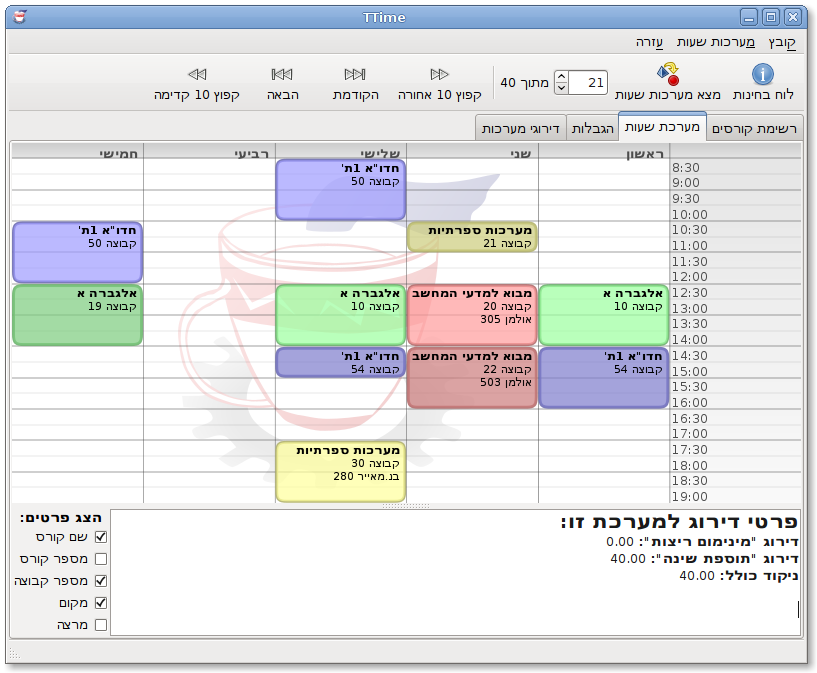
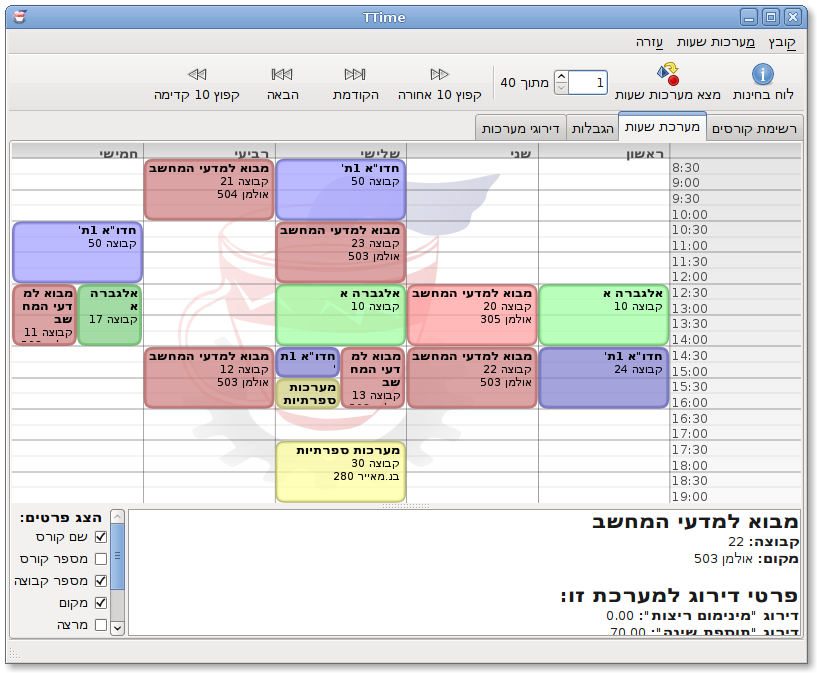
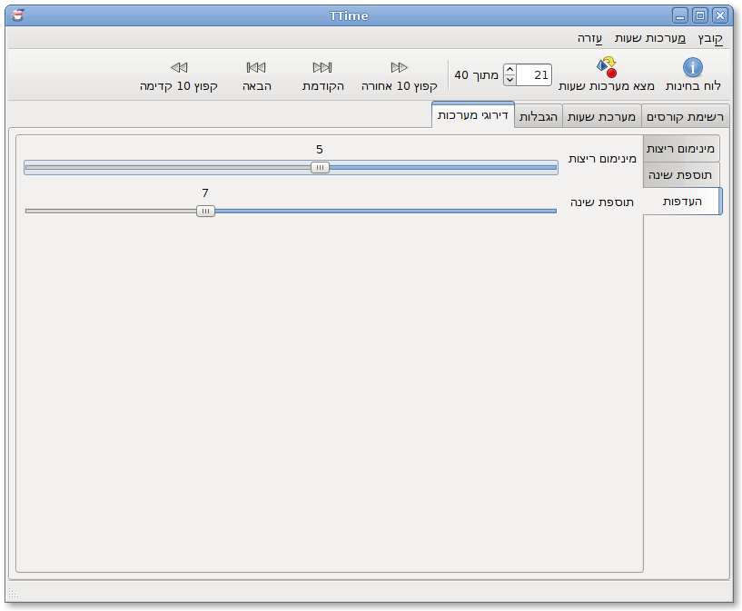

TTime is (breath) a rewrite of a fork of a replacement of an updated version of software intended to help Technion students organize their timetables. (That was UDonkey-mono, UDonkey.Net, Marprog-Windows, Marprog-DOS). It automatically fetches its data from the Technion, and then generates automated schedules for the user according to his selections. We intend to make this program easy-to-use and extensible.
While this is technically a rewrite, a lot of concepts and code were borrowed from UDonkey, so thanks!
There are three options for downloading TTime:
git clone git://github.com/lutzky/ttime.git
You should take a look at the documentation.
We use ditz for issue tracking. See our ditz page.
The following screenshots are from the Hebrew version.
The main view, displaying the course list (filtered by a search) and the currently selected courses. Note that the search was performed by the course's nickname, not its full name.
The exam schedule, generated from the selected courses.
The Constraints tab allows you to show only schedules matching the selected contraints. All constraints are optional, including the "No clashes" constraint (so schedules with clashes can be found).
The standard schedule view.
The multi-schedule feature, showing alternatives for the "Intro to CS" tutorial.
Schedule rating priorities allows you to decide which schedules will be written first.
